For this project, we implemented parts 1 and 2 of this project to add additional features to our ray tracer. In particular, we enabled our ray tracer to render mirror/glass objects by implemention reflection and refraction. Additionally, we implemented the Microfacet model to render reflective microfacet materials like copper and gold. Most of the bugs we encountered during this project came from small math mistakes, so much of the debugging occurred by trying to fine-comb our work and see if our equations lined up with the spec.
To simulate both mirror and glass materials, we had to implement BSDF reflect and refract functions where given an input ray vector wo, we would store its reflected/refracted ray vector in *wi.
Here, we set n1 = 1 to simulate air, and n2 = `ior`. After, if there is total internal reflection, we would reflect with *pdf = 1; otherwise, we would calculate R, then either reflect the ray with probablility R or refract the ray with probability 1 - R, weighing our returned sample ray based on this coefficient.
Show a sequence of six images of scene `CBspheres.dae` rendered with `max_ray_depth` set to 0, 1, 2, 3, 4, 5, and 100. The other settings should be at least 64 samples per pixel and 4 samples per light. Make sure to include all screenshots.
The following images were rendered with this command: `./pathtracer -t 8 -s 256 -l 4 -m [rays] -f [filename] ../dae/sky/CBspheres.dae`|
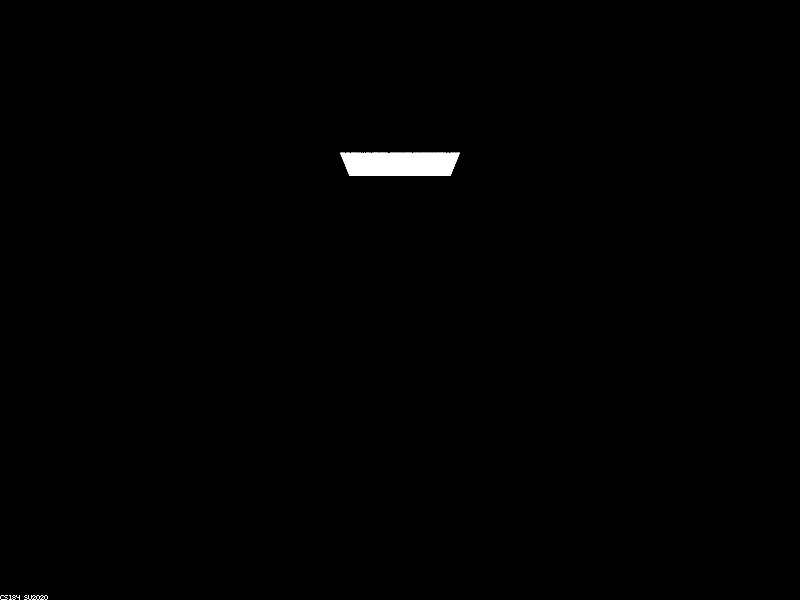
|
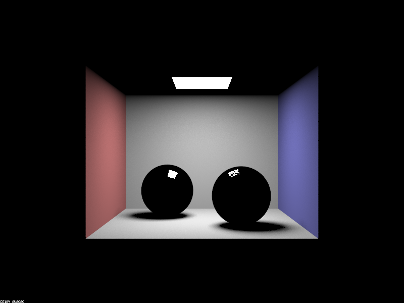
|
|
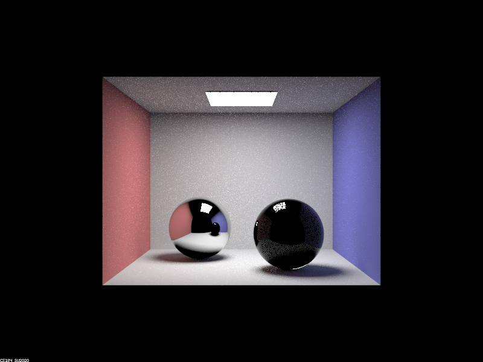
|
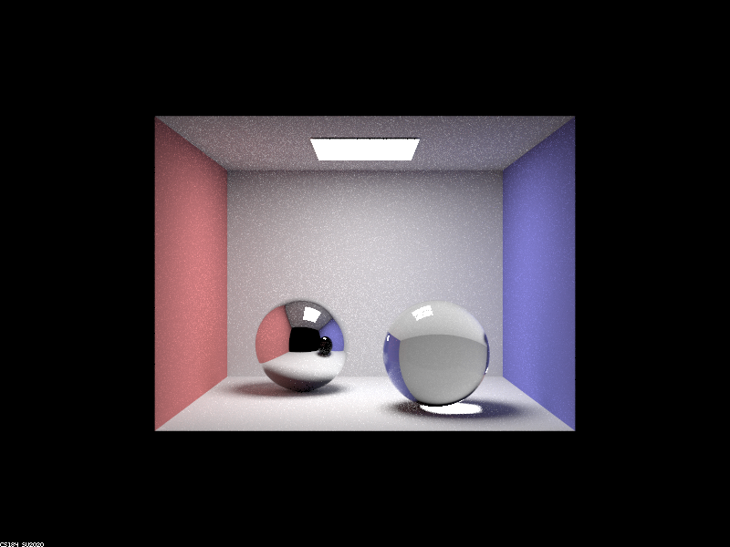
|
|
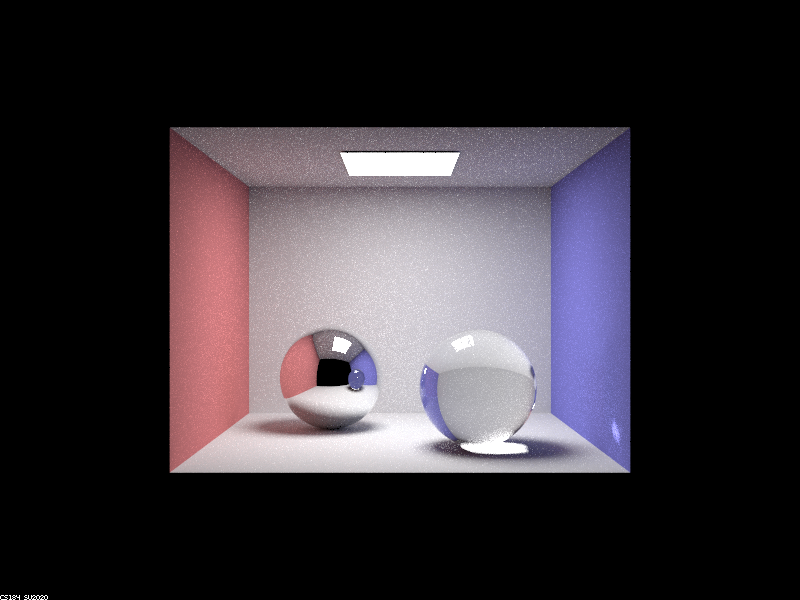
|
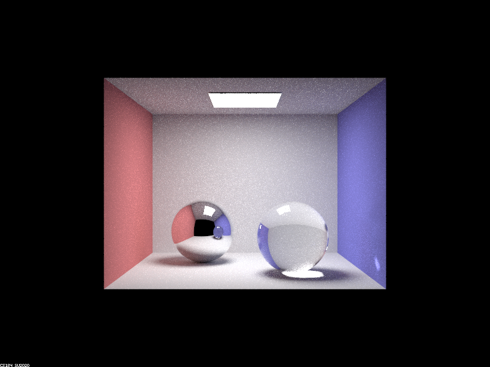
|
|
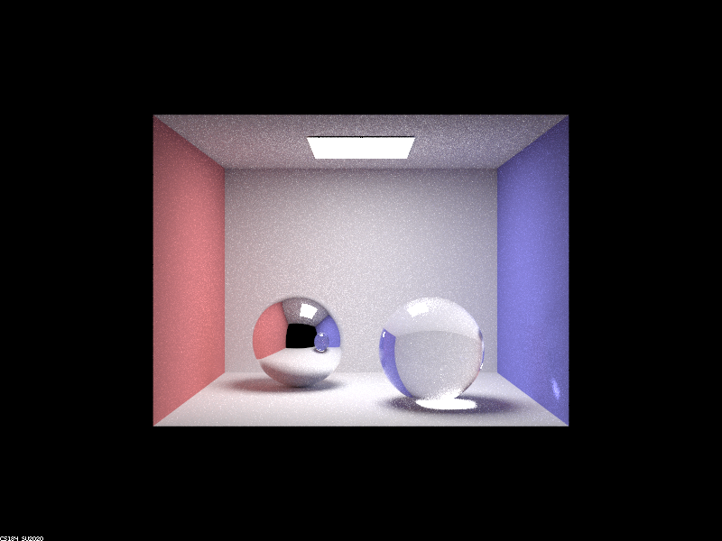
|
Point out the new multibounce effects that appear in each image.
As we increased the number of bounces in each image, we started to see more reflective/refractive properties within the glass spheres. In particular, the left sphere is purely reflective (mirror), which means that the surface of the sphere displays its surroundings. However, the right sphere is both reflective and refractive (glass), which means some of the light rays enter the sphere and create a more glass-like appearance.
Explain how these bounce numbers relate to the particular effects that appear. Make sure to include all screenshots.
To implmement the Microfacet model, we first had to define the BRDF evaluation function MicrofacetBSDF::f() given the Fresnel term F, the shadow-masking term G, and the normal distribution function N. This relationship is shown in the image below:
In particular, the Fresnel term for air-conductor materials is wavelength dependent, depending on the `eta` and `k` values of the microfacet material that we are trying to simulate. As such, we would pass in the `eta` and `k` values of our material into this Fresnel term and the incident ray `wi` which would output the Vector3D Fresnel term we needed for our evaluation function. The equations are shown below:
Additionally, the normal distribution function (NDF) simulates how the normals of the microfacet material are distributed given the half-vector `h` between the incident and outgoing rays `wi` and `wo` respectively. The NDF used for this material is derived from the Beckmann distribution, which is similar to a Gaussian distribution but relies on the roughness of the surface $\alpha$ and `theta_h`, or the angle between the half-vector `h` and the surface normal `n` (where `n` is the normal vector for the z-axis). This equation is also defined below:
The shadow-masking term G is simply defined as 1 / (1 + Lambda(wi) + Lambda(wo)), where the Lambda function is unique to the microfacet distribution (in this case, the Beckmann distribution).
After defining our model, we implemented importance sampling for our BRDF model such that we prioritize sampling on parts of our image that is consistent with the Beckmann distribution. This is much more efficient than sampling with cosine hemisphere sampling and would cause the rendered image to converge faster. We achieved this by sampling a microfacet normal vector `h` to reflect our outgoing ray `wo` by from pdfs created by applying the inversion method on the Beckman NDF, then calculating the pdf of the sampled `wi` with respect to the solid angle.
Show a screenshot sequence of 4 images of scene `CBdragon_microfacet_au.dae` rendered with $\alpha$ set to 0.005, 0.05, 0.25 and 0.5. The other settings should be at least 128 samples per pixel and 1 samples per light. The number of bounces should be at least 5. Describe the differences between different images. Note that, to change the $\alpha$, just open the .dae file and search for `microfacet`.
The following images were rendered with this command: `./pathtracer -t 8 -s 256 -l 4 -m 5 -f [filename] ../dae/sky/CBdragon_microfacet_au.dae`, changing $\alpha$ manually in the .dae file.|
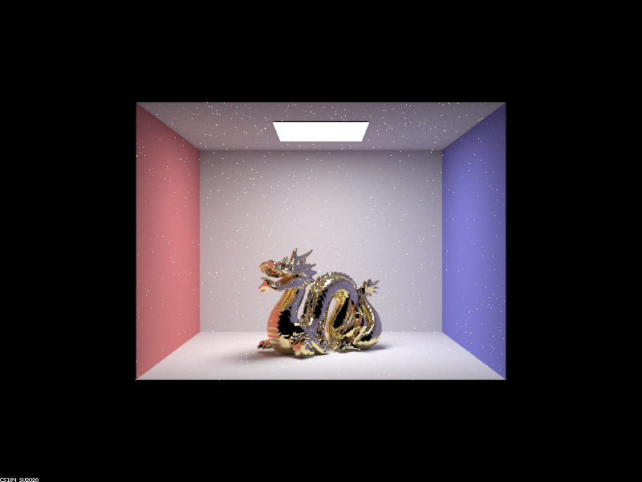
|
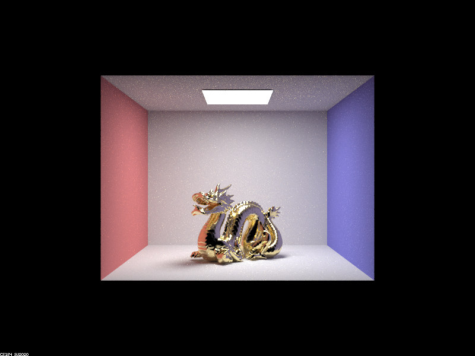
|
|
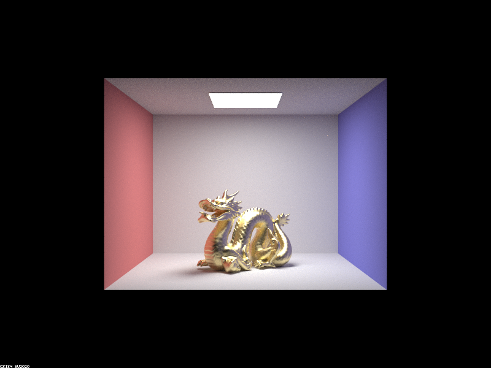
|
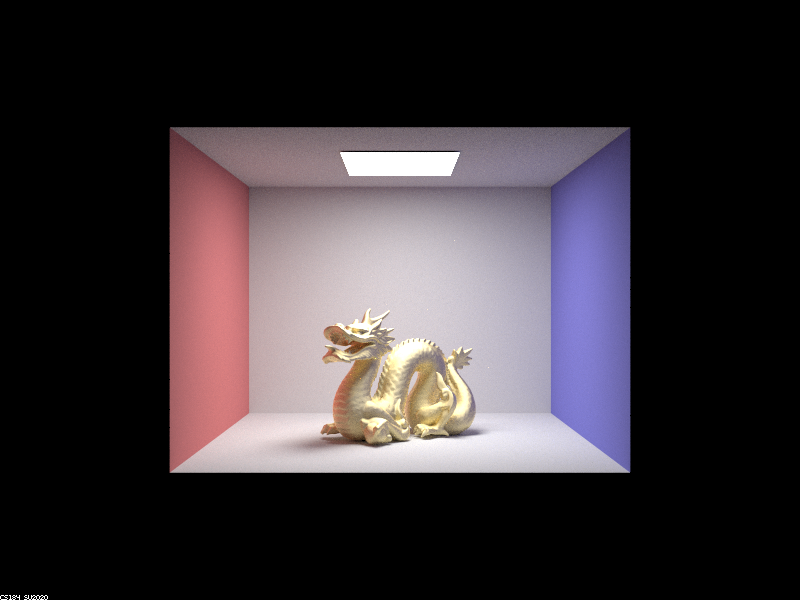
|
The $\alpha$ represents the roughness of the microfacet material of the object. With very small values of $\alpha$, we notice that the dragon is much glossier and reflective, therefore having a much shinier appearance. As we increase our $\alpha$ value, we see the appearance of the dragon become more gold since our material is becoming rougher and is less reflective/absorbs the light more. Additionally, our images with lower $\alpha$ values are a bit noisier due to the increased reflectiveness of the microfacet material whereas larger $\alpha$s don't exhibit as much noise.
Show two images of scene `CBbunny_microfacet_cu.dae` rendered using cosine hemisphere sampling (default) and your importance sampling. The sampling rate should be fixed at 64 samples per pixel and 1 samples per light. The number of bounces should be at least 5. Briefly discuss their difference.
The following images were rendered with this command: `./pathtracer -t 8 -s 64 -l 1 -m 5 -f [filename] ../dae/sky/CBbunny_microfacet_cu.dae`, changing $\alpha$ manually in the .dae file.|
|
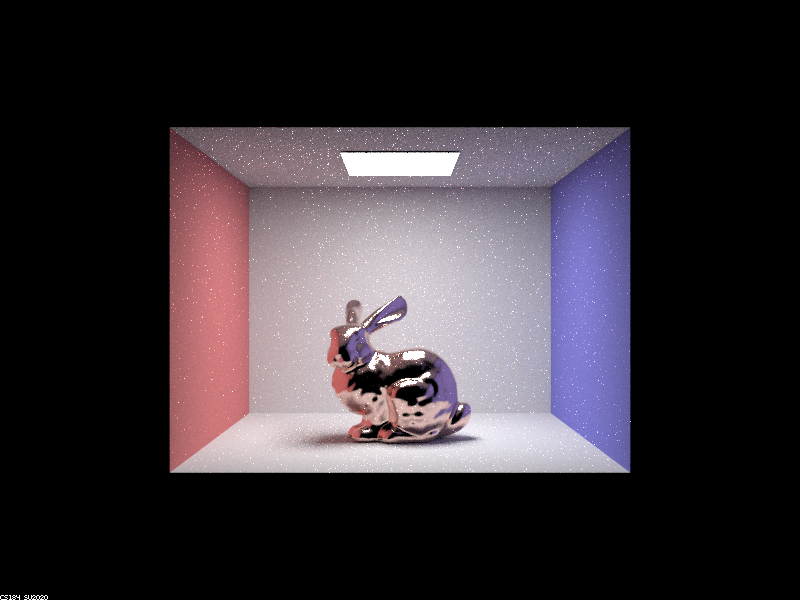
|
With cosine hemisphere sampling, we see that the general shape of the bunny is rendered; however, there are many white specks on the bunny's surface since those pixels have yet to converge. With importance sampling, since we model our pdf to closely resemble the normal distribution function (NDF), we see that most of the pixels on the bunny's surface are rendered properly given the same number of samples per pixel (64) and samples per light (1).
Show at least one image with some other conductor material, replacing `eta` and `k`. Note that you should look up values for real data rather than modifying them arbitrarily. Tell us what kind of material your parameters correspond to.
The following image was rendered with this command: `./pathtracer -t 8 -s 256 -l 4 -m 5 -f dragon_bismuth.png ../dae/sky/CBdragon_microfacet_au.dae`|
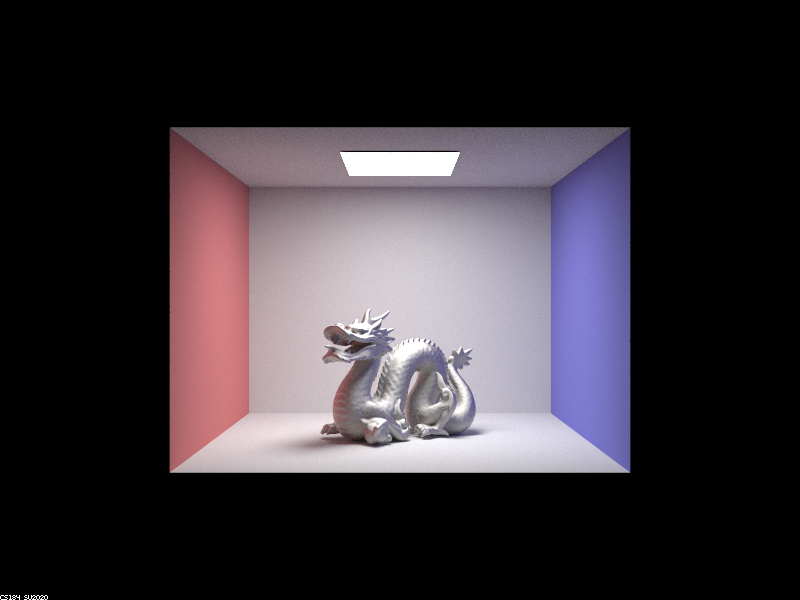
|
We used the following `eta` and `k` values to represent the microfacet material bismuth at wavelengths 614 nm, 549 nm, and 466 nm (for red, green, blue respectively):
For this project, we both worked on the project concurrently, taking turns writing code and communicating ideas (i.e. driver/passenger model). Overall, we thought the collaboration went really well and was pretty efficient, especially since we spent a while working on project 3-1 and figuring out how the initial ray tracer was implemented.